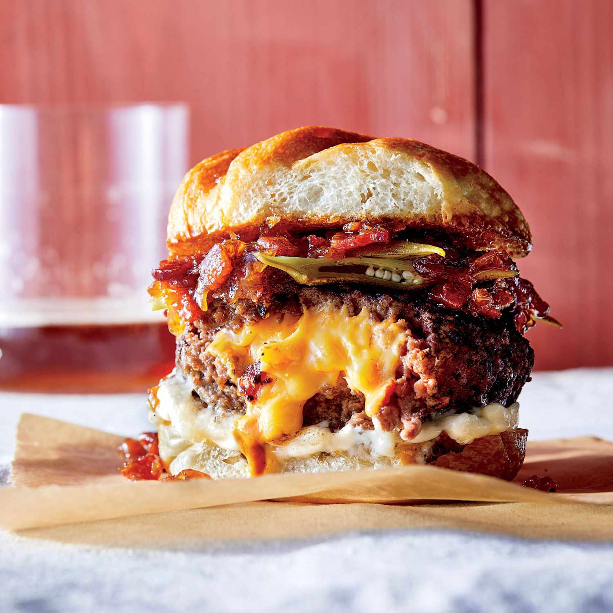

Named one of Time magazine's 17 most influential burgers, Juicy Lucy—also purposely spelled without the "i"—is a twist on the classic cheeseburger in which the cheese is melted inside the patty. Hands down a Minneapolis favorite, the cheese-stuffed Lucy burger is an exquisite experience which actually requires some skill in order to know how to eat it without burning your mouth with a hot shot of the flowing molten American cheese locked between the two ground beef patties.
Meal prep time : 25 minutes
Servings : 4